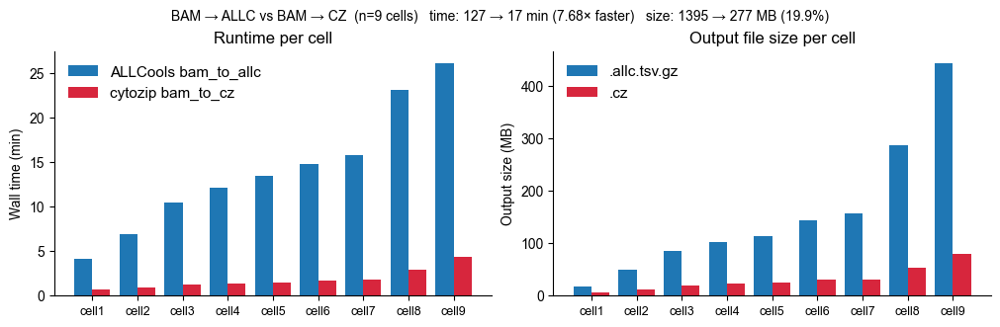
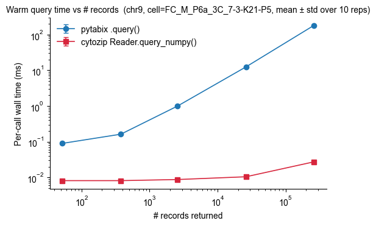

DNA Methylation Analysis with cytozip
CLI walkthrough using 9 mouse 3C-seq cells shipped under cytozip_example_data/bam/. All steps are demonstrated as shell commands (! czip ...); benchmark results produced offline by the scripts under tests/ are loaded and rendered as tables.
Setup + reference
.czBAM →
.cz(czip bam_to_cz)ALLC →
.cz(czip allc2cz) + benchmark table (BAM→ALLC vs BAM→CZ, ALLC→CZ)view/query(local) + benchmark table (tabix vs czip query)view/querya remote.czcatcz+merge_czcz_to_anndata
Benchmark
python tests/benchmark_bam_to_cz.py -j 20
python tests/benchmark_allc_to_cz.py -j 20
python tests/benchmark_query.py
[1]:
import os,sys
import pandas as pd
os.chdir(os.path.expanduser("~/Projects/Github/cytozip/cytozip_example_data"))
1. Build the reference .cz
The reference holds the genome-wide (chrom, pos, strand, context) axis. Per-cell .cz then store only mc/cov and reuse the reference’s positions, cutting per-cell size by ~5×.
[80]:
!czip build_ref --help
usage: czip build_ref [-h] -g GENOME [-O OUTPUT] [-p PATTERN] [-j JOBS]
[--keep_temp] [--no_delta]
options:
-h, --help show this help message and exit
-g GENOME, --genome GENOME
reference genome FASTA (default: None)
-O OUTPUT, --output OUTPUT
output .cz file (default: hg38_allc.cz)
-p PATTERN, --pattern PATTERN
nucleotide pattern (default: C)
-j JOBS, --jobs JOBS number of parallel processes (CPUs) (default: 12)
--keep_temp keep temp directory (default: False)
--no_delta disable DELTA encoding on the pos column (default: on,
gives ~3x smaller reference files with mild query
overhead) (default: False)
[3]:
!time czip build_ref -g ~/Ref/mm10/mm10_ucsc_with_chrL.fa -O output/mm10_with_chrL.allc.cz -j 20
2026-04-26 13:18:07.418 | DEBUG | cytozip.allc:WriteC:60 - chr1
2026-04-26 13:18:08.102 | DEBUG | cytozip.allc:WriteC:60 - chr10
2026-04-26 13:18:08.772 | DEBUG | cytozip.allc:WriteC:60 - chr11
2026-04-26 13:18:09.438 | DEBUG | cytozip.allc:WriteC:60 - chr12
2026-04-26 13:18:10.071 | DEBUG | cytozip.allc:WriteC:60 - chr13
2026-04-26 13:18:10.770 | DEBUG | cytozip.allc:WriteC:60 - chr14
2026-04-26 13:18:11.307 | DEBUG | cytozip.allc:WriteC:60 - chr15
2026-04-26 13:18:11.827 | DEBUG | cytozip.allc:WriteC:60 - chr16
2026-04-26 13:18:12.356 | DEBUG | cytozip.allc:WriteC:60 - chr17
2026-04-26 13:18:12.875 | DEBUG | cytozip.allc:WriteC:60 - chr18
2026-04-26 13:18:13.151 | DEBUG | cytozip.allc:WriteC:60 - chr1_GL456210_random
2026-04-26 13:18:13.153 | DEBUG | cytozip.allc:WriteC:60 - chr1_GL456211_random
2026-04-26 13:18:13.155 | DEBUG | cytozip.allc:WriteC:60 - chr19
2026-04-26 13:18:13.156 | DEBUG | cytozip.allc:WriteC:60 - chr1_GL456212_random
2026-04-26 13:18:13.158 | DEBUG | cytozip.allc:WriteC:60 - chr1_GL456213_random
2026-04-26 13:18:13.160 | DEBUG | cytozip.allc:WriteC:60 - chr1_GL456221_random
2026-04-26 13:18:14.193 | DEBUG | cytozip.allc:WriteC:60 - chr2
2026-04-26 13:18:15.027 | DEBUG | cytozip.allc:WriteC:60 - chr3
2026-04-26 13:18:15.858 | DEBUG | cytozip.allc:WriteC:60 - chr4_JH584292_random
2026-04-26 13:18:15.858 | DEBUG | cytozip.allc:WriteC:60 - chr4_GL456350_random
2026-04-26 13:18:15.858 | DEBUG | cytozip.allc:WriteC:60 - chr4_GL456216_random
2026-04-26 13:18:15.859 | DEBUG | cytozip.allc:WriteC:60 - chr4_JH584294_random
2026-04-26 13:18:15.859 | DEBUG | cytozip.allc:WriteC:60 - chr4_JH584295_random
2026-04-26 13:18:15.859 | DEBUG | cytozip.allc:WriteC:60 - chr4_JH584293_random
2026-04-26 13:18:15.879 | DEBUG | cytozip.allc:WriteC:60 - chr4
2026-04-26 13:18:16.682 | DEBUG | cytozip.allc:WriteC:60 - chr5_JH584296_random
2026-04-26 13:18:16.683 | DEBUG | cytozip.allc:WriteC:60 - chr5_JH584297_random
2026-04-26 13:18:16.683 | DEBUG | cytozip.allc:WriteC:60 - chr5_JH584298_random
2026-04-26 13:18:16.684 | DEBUG | cytozip.allc:WriteC:60 - chr5_GL456354_random
2026-04-26 13:18:16.685 | DEBUG | cytozip.allc:WriteC:60 - chr5_JH584299_random
2026-04-26 13:18:16.702 | DEBUG | cytozip.allc:WriteC:60 - chr5
2026-04-26 13:18:17.492 | DEBUG | cytozip.allc:WriteC:60 - chr6
2026-04-26 13:18:18.253 | DEBUG | cytozip.allc:WriteC:60 - chr7_GL456219_random
2026-04-26 13:18:18.272 | DEBUG | cytozip.allc:WriteC:60 - chr7
2026-04-26 13:18:18.933 | DEBUG | cytozip.allc:WriteC:60 - chr8
2026-04-26 13:18:19.576 | DEBUG | cytozip.allc:WriteC:60 - chrM
2026-04-26 13:18:19.592 | DEBUG | cytozip.allc:WriteC:60 - chr9
2026-04-26 13:18:20.555 | DEBUG | cytozip.allc:WriteC:60 - chrX_GL456233_random
2026-04-26 13:18:20.576 | DEBUG | cytozip.allc:WriteC:60 - chrX
2026-04-26 13:18:21.008 | DEBUG | cytozip.allc:WriteC:60 - chrY_JH584300_random
2026-04-26 13:18:21.008 | DEBUG | cytozip.allc:WriteC:60 - chrY_JH584301_random
2026-04-26 13:18:21.008 | DEBUG | cytozip.allc:WriteC:60 - chrY_JH584302_random
2026-04-26 13:18:21.010 | DEBUG | cytozip.allc:WriteC:60 - chrUn_GL456239
2026-04-26 13:18:21.010 | DEBUG | cytozip.allc:WriteC:60 - chrUn_GL456382
2026-04-26 13:18:21.010 | DEBUG | cytozip.allc:WriteC:60 - chrUn_GL456378
2026-04-26 13:18:21.011 | DEBUG | cytozip.allc:WriteC:60 - chrUn_GL456381
2026-04-26 13:18:21.011 | DEBUG | cytozip.allc:WriteC:60 - chrUn_GL456367
2026-04-26 13:18:21.011 | DEBUG | cytozip.allc:WriteC:60 - chrY_JH584303_random
2026-04-26 13:18:21.013 | DEBUG | cytozip.allc:WriteC:60 - chrUn_GL456383
2026-04-26 13:18:21.014 | DEBUG | cytozip.allc:WriteC:60 - chrUn_GL456385
2026-04-26 13:18:21.014 | DEBUG | cytozip.allc:WriteC:60 - chrUn_GL456392
2026-04-26 13:18:21.014 | DEBUG | cytozip.allc:WriteC:60 - chrUn_GL456390
2026-04-26 13:18:21.015 | DEBUG | cytozip.allc:WriteC:60 - chrUn_GL456393
2026-04-26 13:18:21.030 | DEBUG | cytozip.allc:WriteC:60 - chrUn_GL456360
2026-04-26 13:18:21.030 | DEBUG | cytozip.allc:WriteC:60 - chrUn_GL456394
2026-04-26 13:18:21.030 | DEBUG | cytozip.allc:WriteC:60 - chrUn_GL456389
2026-04-26 13:18:21.030 | DEBUG | cytozip.allc:WriteC:60 - chrUn_GL456396
2026-04-26 13:18:21.030 | DEBUG | cytozip.allc:WriteC:60 - chrUn_GL456359
2026-04-26 13:18:21.030 | DEBUG | cytozip.allc:WriteC:60 - chrUn_GL456372
2026-04-26 13:18:21.030 | DEBUG | cytozip.allc:WriteC:60 - chrUn_GL456387
2026-04-26 13:18:21.030 | DEBUG | cytozip.allc:WriteC:60 - chrY
2026-04-26 13:18:21.033 | DEBUG | cytozip.allc:WriteC:60 - chrUn_GL456370
2026-04-26 13:18:21.034 | DEBUG | cytozip.allc:WriteC:60 - chrUn_GL456368
2026-04-26 13:18:21.034 | DEBUG | cytozip.allc:WriteC:60 - chrUn_JH584304
2026-04-26 13:18:21.034 | DEBUG | cytozip.allc:WriteC:60 - chrUn_GL456379
2026-04-26 13:18:21.034 | DEBUG | cytozip.allc:WriteC:60 - chrUn_GL456366
2026-04-26 13:18:21.035 | DEBUG | cytozip.allc:WriteC:60 - chrL
real 0m43.555s
user 3m33.865s
sys 0m11.145s
[26]:
!czip header -I output/mm10_with_chrL.allc.cz
magic : b'CZIP'
version : 0.3
total_size : 1324830611
message : /home/x-wding2/Ref/mm10/mm10_ucsc_with_chrL.fa
formats : ['Q', 'c', '3s']
columns : ['pos', 'strand', 'context']
sort_col : 0
delta_cols : [0]
chunk_dims : ['chrom']
header_size : 102
[27]:
! czip view -I output/mm10_with_chrL.allc.cz --show_dims 0 | head
chrom pos strand context
chr1 3000003 + CTG
chr1 3000005 - CAG
chr1 3000009 + CTA
chr1 3000016 - CAA
chr1 3000018 - CAC
chr1 3000019 - CCA
chr1 3000023 + CTT
chr1 3000027 - CAA
chr1 3000029 - CTC
[28]:
! czip summary -I output/mm10_with_chrL.allc.cz | head
chrom chunk_start_offset chunk_size chunk_tail_offset chunk_nblocks chunk_nrows
chr1 102 95328851 95386814 3615 78962721
chr10 95386814 63310564 158735944 2409 52609184
chr11 158735944 60770669 219544747 2382 52027265
chr12 219544747 58457323 278037836 2234 48799752
chr13 278037836 58621213 336694783 2232 48750883
chr14 336694783 60350467 397081896 2289 49987736
chr15 397081896 50425550 447538412 1934 42230765
chr16 447538412 47066788 494633718 1781 38899643
chr17 494633718 46270276 540932704 1793 39153472
3. BAM → .cz
Convert a position-sorted BAM directly to .cz (no intermediate ALLC text). The output has only mc / cov because we pass a reference.
[81]:
!czip bam_to_cz --help
usage: czip bam_to_cz [-h] -I INPUT -g GENOME [-O OUTPUT]
[--num_upstr_bases NUM_UPSTR_BASES]
[--num_downstr_bases NUM_DOWNSTR_BASES]
[--min_mapq MIN_MAPQ]
[--min_base_quality MIN_BASE_QUALITY] [-c BATCH_SIZE]
[--convert_bam_strandness] [--save_count_df]
[--mode {full,pos_mc_cov,mc_cov}]
[--count_fmt {B,H,I,Q}] [-r REFERENCE]
options:
-h, --help show this help message and exit
-I INPUT, --input INPUT
input position-sorted BAM (bismark/hisat-3n) (default:
None)
-g GENOME, --genome GENOME
indexed reference fasta (.fai required) (default:
None)
-O OUTPUT, --output OUTPUT
output .cz path (default: <bam_stem>.cz) (default:
None)
--num_upstr_bases NUM_UPSTR_BASES
bases upstream of C in context (0 for BS-seq, 1 for
NOMe) (default: 0)
--num_downstr_bases NUM_DOWNSTR_BASES
bases downstream of C in context (default: 2)
--min_mapq MIN_MAPQ min MAPQ passed to samtools mpileup (default: 10)
--min_base_quality MIN_BASE_QUALITY
min base quality passed to samtools mpileup (default:
20)
-c BATCH_SIZE, --batch_size BATCH_SIZE
rows per batch (one on-disk chunk) (default: 5000)
--convert_bam_strandness
rewrite BAM so is_forward matches XG/YZ (hisat-3n PE)
(default: False)
--save_count_df write <output>.count.csv context summary (default:
False)
--mode {full,pos_mc_cov,mc_cov}
storage layout: full=[pos,strand,context,mc,cov];
pos_mc_cov=[pos,mc,cov]; mc_cov=[mc,cov] (requires
--reference). Default mc_cov is the most compact.
(default: mc_cov)
--count_fmt {B,H,I,Q}
struct code for mc/cov columns: B=uint8 (1 B/max 255,
clipped), H=uint16 (2 B/max 65535). B is the most
compact and suits typical single-cell data. (default:
B)
-r REFERENCE, --reference REFERENCE
reference .cz with pos column; required when --mode
mc_cov (default: None)
[2]:
! time czip bam_to_cz -I bam/FC_M_P12b_3C_2-5-M17-N10.hisat3n_dna.all_reads.deduped.bam \
--genome ~/Ref/mm10/mm10_ucsc_with_chrL.fa -O output/cz/FC_M_P12b_3C_2-5-M17-N10.cz \
--mode mc_cov --count_fmt B --reference output/mm10_with_chrL.allc.cz
/home/x-wding2/Software/conda/m3c/lib/python3.10/site-packages/cytozip/bam.py:726: UserWarning: mc/cov value exceeds count_fmt='B' max (255); clipping. Consider count_fmt='H' for bulk/high-coverage data.
_handle_site(
real 1m49.128s
user 1m37.383s
sys 0m8.018s
[31]:
#bam to allc
from ALLCools._bam_to_allc import bam_to_allc
%time bam_to_allc(bam_path="bam/FC_M_P12b_3C_2-5-M17-N10.hisat3n_dna.all_reads.deduped.bam", \
reference_fasta=os.path.expanduser("~/Ref/mm10/mm10_ucsc_with_chrL.fa"), \
output_path="output/allc/FC_M_P12b_3C_2-5-M17-N10.allc.tsv.gz", \
cpu=1,num_upstr_bases=0, num_downstr_bases=2, \
min_mapq=10, min_base_quality=20)
CPU times: user 2min 58s, sys: 7.24 s, total: 3min 5s
Wall time: 3min 21s
[31]:
| mc | cov | mc_rate | genome_cov | |
|---|---|---|---|---|
| CTT | 2135943 | 4141584 | 0.515731 | 0.066954 |
| CTA | 1326142 | 2710024 | 0.489347 | 0.066954 |
| CAA | 1716819 | 3719684 | 0.461550 | 0.066954 |
| CCA | 1680893 | 3521141 | 0.477372 | 0.066954 |
| CAC | 1501706 | 3073867 | 0.488540 | 0.066954 |
| CAG | 1929009 | 4047201 | 0.476628 | 0.066954 |
| CTG | 2026603 | 4048731 | 0.500553 | 0.066954 |
| CCT | 1706829 | 3381003 | 0.504829 | 0.066954 |
| CCC | 1108042 | 2312639 | 0.479124 | 0.066954 |
| CAT | 1831117 | 3671417 | 0.498749 | 0.066954 |
| CTC | 1614182 | 3204844 | 0.503669 | 0.066954 |
| CGT | 504257 | 581903 | 0.866565 | 0.066954 |
| CGG | 415024 | 474101 | 0.875392 | 0.066954 |
| CCG | 240952 | 478252 | 0.503818 | 0.066954 |
| CGC | 350084 | 391463 | 0.894297 | 0.066954 |
| CGA | 404652 | 472190 | 0.856969 | 0.066954 |
| CNN | 1 | 2 | 0.500000 | 0.066954 |
| CTN | 2 | 2 | 1.000000 | 0.066954 |
BAM → .cz benchmark vs ALLCools
Produced by tests/benchmark_bam_to_cz.py -j 9. ALLCools writes a gzipped TSV (.allc.tsv.gz); cytozip writes a chunked, columnar zstd-compressed .cz.
[2]:
import pandas as pd
bam_bench = pd.read_csv('output/bam_benchmark/bam_benchmark.tsv', sep='\t')
bam_bench.round(2)
[2]:
| cell | bam_size_mb | n_reads | allc_wall_s | allc_rss_mb | allc_size_mb | allc_cached | cz_wall_s | cz_rss_mb | cz_size_mb | speedup | size_ratio | |
|---|---|---|---|---|---|---|---|---|---|---|---|---|
| 0 | FC_E17b_3C_5-5-I24-A21 | 685.99 | 7330382 | 1566.53 | 571.61 | 442.62 | True | 261.78 | 935.12 | 78.89 | 5.98 | 0.18 |
| 1 | FC_M_E15a_3C_1-1-I5-B1 | 177.37 | 1787812 | 728.97 | 571.79 | 102.53 | True | 84.16 | 927.48 | 22.41 | 8.66 | 0.22 |
| 2 | FC_M_P12b_3C_2-5-M17-N10 | 239.89 | 2307326 | 884.07 | 577.01 | 143.12 | True | 102.93 | 926.09 | 29.85 | 8.59 | 0.21 |
| 3 | FC_M_P3b_3C_6-6-J3-P24 | 147.36 | 1395949 | 628.37 | 573.83 | 85.71 | True | 74.58 | 929.74 | 19.52 | 8.43 | 0.23 |
| 4 | FC_M_P6a_3C_7-3-K21-P5 | 89.76 | 938870 | 412.18 | 574.35 | 48.84 | True | 56.10 | 942.63 | 12.32 | 7.35 | 0.25 |
| 5 | FC_M_P9B_3C_6-2-F6-O4 | 32.28 | 342778 | 245.17 | 572.93 | 17.61 | True | 40.59 | 926.66 | 6.15 | 6.04 | 0.35 |
| 6 | FC_P0b_3C_5-1-I24-J14 | 485.51 | 5028030 | 1385.09 | 574.75 | 285.50 | True | 174.42 | 923.10 | 52.72 | 7.94 | 0.18 |
| 7 | FC_P13a_3C_7-1-A11-O1 | 260.71 | 2588754 | 949.58 | 571.56 | 155.84 | True | 108.78 | 926.09 | 31.47 | 8.73 | 0.20 |
| 8 | FC_P28a_3C_2-1-E5-N14 | 186.32 | 1908846 | 803.77 | 574.15 | 112.95 | True | 87.11 | 927.01 | 24.11 | 9.23 | 0.21 |
[7]:
import numpy as np
import matplotlib as mpl
import matplotlib.pyplot as plt
mpl.rcParams['pdf.fonttype'] = 42
mpl.rcParams['font.family'] = 'Arial'
df = bam_bench.sort_values('n_reads').reset_index(drop=True)
labels = [f'cell{i+1}' for i in range(len(df))]
x = np.arange(len(df))
w = 0.4
c_allc, c_cz = '#1f77b4', '#d7263d'
fig, axes = plt.subplots(1, 2, figsize=(10, 3.2), constrained_layout=True)
ax = axes[0]
ax.bar(x - w/2, df['allc_wall_s'] / 60, w, label='ALLCools bam_to_allc', color=c_allc)
ax.bar(x + w/2, df['cz_wall_s'] / 60, w, label='cytozip bam_to_cz', color=c_cz)
ax.set_ylabel('Wall time (min)')
ax.set_title('Runtime per cell')
ax.set_xticks(x)
ax.set_xticklabels(labels, rotation=0, fontsize=9)
ax.legend(frameon=False, fontsize=11)
for s in ('top', 'right'):
ax.spines[s].set_visible(False)
ax = axes[1]
ax.bar(x - w/2, df['allc_size_mb'], w, label='.allc.tsv.gz', color=c_allc)
ax.bar(x + w/2, df['cz_size_mb'], w, label='.cz', color=c_cz)
ax.set_ylabel('Output size (MB)')
ax.set_title('Output file size per cell')
ax.set_xticks(x)
ax.set_xticklabels(labels, rotation=0, fontsize=9)
ax.legend(frameon=False, fontsize=11)
for s in ('top', 'right'):
ax.spines[s].set_visible(False)
tot_allc_t, tot_cz_t = df['allc_wall_s'].sum() / 60, df['cz_wall_s'].sum() / 60
tot_allc_s, tot_cz_s = df['allc_size_mb'].sum(), df['cz_size_mb'].sum()
fig.suptitle(
f'BAM → ALLC vs BAM → CZ (n={len(df)} cells) '
f'time: {tot_allc_t:.0f} → {tot_cz_t:.0f} min ({tot_allc_t/tot_cz_t:.2f}× faster) '
f'size: {tot_allc_s:.0f} → {tot_cz_s:.0f} MB ({tot_cz_s/tot_allc_s*100:.1f}%)',
fontsize=10,
)
fig.savefig('output/bam_benchmark/bam_benchmark.pdf', bbox_inches='tight')
plt.show()

[3]:
!cat output/bam_benchmark/bam_benchmark.txt
cytozip bam_to_cz vs ALLCools bam_to_allc
============================================
reference FASTA : /home/x-wding2/Ref/mm10/mm10_ucsc_with_chrL.fa
reference .cz : /anvil/projects/x-mcb130189/Wubin/Github/cytozip/cytozip_example_data/output/mm10_with_chrL.allc.cz
BAMs : 9 total reads = 23,628,747
ALLCools cached : 9/9 (timing reused from disk)
ALLCools : time= 7603.7 s peak_rss= 577.0 MB size= 1394.7 MB
cytozip : time= 990.4 s peak_rss= 942.6 MB size= 277.5 MB
speedup (allc / cz time) = 7.68x
compression (cz / allc) = 19.9%
4. ALLC → .cz
Pack an existing .allc.tsv.gz into .cz. Two layouts:
[3]:
! czip allc2cz --help
usage: czip allc2cz [-h] -I INPUT -O OUTPUT [-r REFERENCE]
[--missing_value MISSING_VALUE] [-F FORMATS] [-C COLUMNS]
[-D CHUNK_DIMS] [-u USECOLS] [--ref_pos_col REF_POS_COL]
[--allc_pos_col ALLC_POS_COL] [-s SEP]
[--chrom_order CHROM_ORDER] [-c BATCH_SIZE]
[--sort_col SORT_COL] [--delta_cols DELTA_COLS] [-j JOBS]
[--pattern PATTERN] [--no_skip_existing]
options:
-h, --help show this help message and exit
-I INPUT, --input INPUT
input allc.tsv.gz, OR a directory containing many
allc.tsv.gz (batch mode: --output must be a directory)
(default: None)
-O OUTPUT, --output OUTPUT
output .cz file (single-file), or output directory
(batch mode) (default: None)
-r REFERENCE, --reference REFERENCE
reference .cz file (default: None)
--missing_value MISSING_VALUE
missing value fill (default: [0, 0])
-F FORMATS, --formats FORMATS
column formats (default: ['B', 'B'])
-C COLUMNS, --columns COLUMNS
column names (default: ['mc', 'cov'])
-D CHUNK_DIMS, --chunk_dims CHUNK_DIMS
chunk-key names (default: ['chrom'])
-u USECOLS, --usecols USECOLS
column indices to pack (default: [4, 5])
--ref_pos_col REF_POS_COL
position column index in reference (default: 0)
--allc_pos_col ALLC_POS_COL
position column index in input (default: 1)
-s SEP, --sep SEP separator (default: )
--chrom_order CHROM_ORDER
chrom order file (default: None)
-c BATCH_SIZE, --batch_size BATCH_SIZE
rows per chunk (default: 5000)
--sort_col SORT_COL column name or index to index via per-block
first_coords (enables in-memory bisect for region
queries). Auto-enabled on "pos" when no reference is
used. (default: None)
--delta_cols DELTA_COLS
comma-separated integer column names/indices to store
as in-block deltas (default: None)
-j JOBS, --jobs JOBS number of parallel workers in batch mode (input is a
directory). Reference is decoded once and shared via
fork copy-on-write, so memory cost is paid only once.
(default: 1)
--pattern PATTERN glob pattern for batch mode file discovery (default:
*.allc.tsv.gz)
--no_skip_existing in batch mode, do NOT skip files whose output already
exists (default: False)
[10]:
# Standalone (positions inside the .cz)
! time czip allc2cz -I output/allc/FC_M_P12b_3C_2-5-M17-N10.allc.tsv.gz \
-O output/allc/FC_M_P12b_3C_2-5-M17-N10.with_pos.cz \
-F Q,B,B -C pos,mc,cov -u 1,4,5
2026-04-26 23:48:10.231 | INFO | cytozip.allc:allc2cz:261 - /anvil/projects/x-mcb130189/Wubin/Github/cytozip/cytozip_example_data/output/allc/FC_M_P12b_3C_2-5-M17-N10.allc.tsv.gz
real 0m22.260s
user 0m20.172s
sys 0m1.776s
[11]:
# Reference-aligned (positions come from the reference .cz)
! time czip allc2cz -I output/allc/FC_M_P12b_3C_2-5-M17-N10.allc.tsv.gz \
-O output/allc/FC_M_P12b_3C_2-5-M17-N10.cz \
-r output/mm10_with_chrL.allc.cz
2026-04-26 23:49:10.687 | INFO | cytozip.allc:allc2cz:261 - /anvil/projects/x-mcb130189/Wubin/Github/cytozip/cytozip_example_data/output/allc/FC_M_P12b_3C_2-5-M17-N10.allc.tsv.gz
real 0m50.041s
user 0m41.189s
sys 0m8.606s
[12]:
! ls output/allc/FC_M_P12b_3C_2-5-M17-N10* -sh
512 output/allc/FC_M_P12b_3C_2-5-M17-N10.allc.bench.json
137M output/allc/FC_M_P12b_3C_2-5-M17-N10.allc.tsv.gz
1.5M output/allc/FC_M_P12b_3C_2-5-M17-N10.allc.tsv.gz.tbi
29M output/allc/FC_M_P12b_3C_2-5-M17-N10.cz
42M output/allc/FC_M_P12b_3C_2-5-M17-N10.with_pos.cz
5. view and query
czip view streams an entire dimension (e.g. one chrom). czip query pulls a region. Both can use -r REFERENCE to expand reference-aligned files into full ALLC-style records (chrom / pos / context / mc / cov).
[13]:
! czip view -I output/allc/FC_M_P12b_3C_2-5-M17-N10.cz \
-r output/mm10_with_chrL.allc.cz --show_dims 0 | awk '$6>0' | head
chrom pos strand context mc cov
chr1 3005823 + CTT 0 1
chr1 3005826 + CTA 0 1
chr1 3005836 + CAA 0 1
chr1 3005840 + CCA 0 1
chr1 3005841 + CAC 0 1
chr1 3005843 + CCA 0 1
chr1 3005844 + CAC 0 1
chr1 3005846 + CAA 1 1
chr1 3005850 + CCA 0 1
[14]:
! tabix output/allc/FC_M_P12b_3C_2-5-M17-N10.allc.tsv.gz chr9:3000294-3005294 | head
chr9 3000294 - CAT 15 23 1
chr9 3000296 + CCT 51 62 1
chr9 3000297 + CTA 53 63 1
chr9 3000300 + CAA 52 65 1
chr9 3000304 - CAT 2 26 1
chr9 3000305 - CCA 1 27 1
chr9 3000307 + CAT 60 71 1
chr9 3000312 + CTA 63 76 1
chr9 3000321 + CCA 67 78 1
chr9 3000322 + CAA 65 76 1
Failed to write to stdout: Broken pipe
[15]:
! time czip query -I output/allc/FC_M_P12b_3C_2-5-M17-N10.cz \
-r output/mm10_with_chrL.allc.cz -K chr9 -s 3000294 -e 3005294 | head
chrom pos strand context mc cov
chr9 3000294 - CAT 15 23
chr9 3000296 + CCT 51 62
chr9 3000297 + CTA 53 63
chr9 3000300 + CAA 52 65
chr9 3000304 - CAT 2 26
chr9 3000305 - CCA 1 27
chr9 3000307 + CAT 60 71
chr9 3000312 + CTA 63 76
chr9 3000321 + CCA 67 78
real 0m0.267s
user 0m0.143s
sys 0m0.091s
Warm query: query_numpy vs pytabix across region sizes
tests/benchmark_query.py also runs a region-size scan: same chrom, growing windows from 5 kb up to 50 Mb on one cell. pytabix per-call time scales ~linearly with the number of records returned (every hit is materialized as a Python tuple), whereas Reader.query_numpy serves the same range out of an already-decoded np.ndarray via np.searchsorted, so it stays roughly constant.
[11]:
import numpy as np
import pandas as pd
import matplotlib as mpl
import matplotlib.pyplot as plt
mpl.rcParams['pdf.fonttype'] = 42
mpl.rcParams['font.family'] = 'Arial'
scale = pd.read_csv('output/query_benchmark/query_scale_benchmark.tsv', sep='\t')
# Aggregate the 10 replicates per size: mean ± std (in ms).
agg = (scale
.assign(pytabix_ms=scale['pytabix_time_s'] * 1e3,
qnumpy_ms=scale['qnumpy_time_s'] * 1e3)
.groupby(['size_bp', 'n_records'], as_index=False)
.agg(pytabix_mean=('pytabix_ms', 'mean'),
pytabix_std=('pytabix_ms', 'std'),
qnumpy_mean=('qnumpy_ms', 'mean'),
qnumpy_std=('qnumpy_ms', 'std'),
n_replicates=('pytabix_ms', 'size'))
.sort_values('size_bp')
.reset_index(drop=True))
display(agg.round(4))
c_tb, c_qn = '#1f77b4', '#d7263d'
fig, ax = plt.subplots(figsize=(5.2, 3.6), constrained_layout=True)
ax.errorbar(agg['n_records'], agg['pytabix_mean'], yerr=agg['pytabix_std'],
marker='o', color=c_tb, capsize=3, lw=1.2,
label='pytabix .query()')
ax.errorbar(agg['n_records'], agg['qnumpy_mean'], yerr=agg['qnumpy_std'],
marker='s', color=c_qn, capsize=3, lw=1.2,
label='cytozip Reader.query_numpy()')
ax.set_xscale('log'); ax.set_yscale('log')
ax.set_xlabel('# records returned')
ax.set_ylabel('Per-call wall time (ms)')
ax.set_title(f'Warm query time vs # records '
f'({scale.iloc[0]["chrom"]}, cell={scale.iloc[0]["cell"]}, '
f'mean ± std over {agg["n_replicates"].iloc[0]} reps)',
fontsize=10)
ax.legend(frameon=False, fontsize=10)
for s in ('top', 'right'):
ax.spines[s].set_visible(False)
fig.savefig('output/query_benchmark/query_scale_benchmark.pdf', bbox_inches='tight')
plt.show()
| size_bp | n_records | pytabix_mean | pytabix_std | qnumpy_mean | qnumpy_std | n_replicates | |
|---|---|---|---|---|---|---|---|
| 0 | 5000 | 52 | 0.0895 | 0.0043 | 0.0081 | 0.0003 | 10 |
| 1 | 50000 | 378 | 0.1621 | 0.0014 | 0.0081 | 0.0003 | 10 |
| 2 | 500000 | 2586 | 0.9992 | 0.0165 | 0.0087 | 0.0005 | 10 |
| 3 | 5000000 | 26169 | 12.4533 | 0.1214 | 0.0104 | 0.0005 | 10 |
| 4 | 50000000 | 260769 | 180.6150 | 2.0174 | 0.0272 | 0.0020 | 10 |

Correctness check: cytozip query vs pytabix
benchmark_query.py also compares the records returned by Reader.query_numpy against pytabix.query() on each cell, in the same chr9:3000294-3005294 region. Two expected differences are accounted for:
``truncated_ge256`` — rows where the original ALLC
mcorcovis ≥ 256 and was saturated to 255 by--count_fmt B(uint8). These are not bugs.``only_in_cz_zero`` — positions present in the reference-aligned
.czbut absent from the ALLC text file because they had no coverage; their(mc, cov)are(0, 0). Also expected.
mismatched (different non-truncated values) and only_in_cz_covered (positions only in .cz that have non-zero coverage) should both be 0 for a correct implementation.
[12]:
corr = pd.read_csv('output/query_benchmark/query_correctness.tsv', sep='\t')
display(corr)
print(f"Total over {len(corr)} cells: "
f"truncated(>=256)={corr['truncated_ge256'].sum()} "
f"mismatched={corr['mismatched'].sum()} "
f"only_in_cz_covered={corr['only_in_cz_covered'].sum()} "
f"only_in_cz_zero={corr['only_in_cz_zero'].sum()}")
| cell | region | pytabix_n | cz_n | truncated_ge256 | mismatched | only_in_cz_zero | only_in_cz_covered | |
|---|---|---|---|---|---|---|---|---|
| 0 | FC_E17b_3C_5-5-I24-A21 | chr9:3000294-3005294 | 1682 | 1758 | 237 | 0 | 76 | 0 |
| 1 | FC_M_E15a_3C_1-1-I5-B1 | chr9:3000294-3005294 | 1547 | 1758 | 44 | 0 | 211 | 0 |
| 2 | FC_M_P12b_3C_2-5-M17-N10 | chr9:3000294-3005294 | 1615 | 1758 | 119 | 0 | 143 | 0 |
| 3 | FC_M_P3b_3C_6-6-J3-P24 | chr9:3000294-3005294 | 1537 | 1758 | 51 | 0 | 221 | 0 |
| 4 | FC_M_P6a_3C_7-3-K21-P5 | chr9:3000294-3005294 | 1480 | 1758 | 11 | 0 | 278 | 0 |
| 5 | FC_M_P9B_3C_6-2-F6-O4 | chr9:3000294-3005294 | 1229 | 1758 | 0 | 0 | 529 | 0 |
| 6 | FC_P0b_3C_5-1-I24-J14 | chr9:3000294-3005294 | 1642 | 1758 | 176 | 0 | 116 | 0 |
| 7 | FC_P13a_3C_7-1-A11-O1 | chr9:3000294-3005294 | 1567 | 1758 | 105 | 0 | 191 | 0 |
| 8 | FC_P28a_3C_2-1-E5-N14 | chr9:3000294-3005294 | 1479 | 1758 | 78 | 0 | 279 | 0 |
Total over 9 cells: truncated(>=256)=821 mismatched=0 only_in_cz_covered=0 only_in_cz_zero=2044
6. View / query a remote .cz (no download)
cytozip reads .cz files directly over HTTP Range requests when they carry a chunk index. Below we query a remote .cz hosted on figshare — only the needed chunks are fetched on-demand.
[16]:
! czip header -I https://neomorph.salk.edu/ftp/bican/FC_M_P12b_3C_2-5-M17-N10.cz
magic : b'CZIP'
version : 0.3
total_size : 29849112
message : mm10_with_chrL.allc.cz
formats : ['B', 'B']
columns : ['mc', 'cov']
sort_col : None
delta_cols : []
chunk_dims : ['chrom']
header_size : 61
[17]:
# view a cz file (no coordinates were stored) alone
! czip view -I https://neomorph.salk.edu/ftp/bican/FC_M_P12b_3C_2-5-M17-N10.cz --show_dims 0 | head
chrom mc cov
chr1 0 0
chr1 0 0
chr1 0 0
chr1 0 0
chr1 0 0
chr1 0 0
chr1 0 0
chr1 0 0
chr1 0 0
[18]:
# query remote .cz file with local reference .cz:
! time czip query -I https://neomorph.salk.edu/ftp/bican/FC_M_P12b_3C_2-5-M17-N10.cz \
-r output/mm10_with_chrL.allc.cz -K chr9 \
-s 3000294 -e 3005294 | head -n 5
chrom pos strand context mc cov
chr9 3000294 - CAT 15 23
chr9 3000296 + CCT 51 62
chr9 3000297 + CTA 53 63
chr9 3000300 + CAA 52 65
real 0m1.080s
user 0m0.217s
sys 0m0.112s
[19]:
# or both the cz and the reference can be accessed via HTTP(S) URLs, without downloading any files locally:
! time czip query -I https://neomorph.salk.edu/ftp/bican/FC_M_P12b_3C_2-5-M17-N10.cz \
-r https://neomorph.salk.edu/ftp/bican/mm10_with_chrL.allc.cz \
-K chr9 -s 3000294 -e 3005294 | head -n 5
# query 5000 bp of regions containing 1759 records
chrom pos strand context mc cov
chr9 3000294 - CAT 15 23
chr9 3000296 + CCT 51 62
chr9 3000297 + CTA 53 63
chr9 3000300 + CAA 52 65
real 0m2.147s
user 0m0.242s
sys 0m0.129s
7. catcz and merge_cz
catcz— concatenate per-cell.czinto one multi-cell.czby adding acell_iddimension.merge_cz— summc/covacross cells (pooled pseudobulk).
[20]:
! ls output/cz/*.cz -sh
76M output/cz/FC_E17b_3C_5-5-I24-A21.cz
22M output/cz/FC_M_E15a_3C_1-1-I5-B1.cz
29M output/cz/FC_M_P12b_3C_2-5-M17-N10.cz
19M output/cz/FC_M_P3b_3C_6-6-J3-P24.cz
12M output/cz/FC_M_P6a_3C_7-3-K21-P5.cz
6.0M output/cz/FC_M_P9B_3C_6-2-F6-O4.cz
51M output/cz/FC_P0b_3C_5-1-I24-J14.cz
31M output/cz/FC_P13a_3C_7-1-A11-O1.cz
23M output/cz/FC_P28a_3C_2-1-E5-N14.cz
[21]:
! time czip catcz -O output/all_cells.cz -I "output/cz/*.cz" --key_added cell_id -F B,B -C mc,cov
real 0m1.424s
user 0m0.206s
sys 0m0.613s
[22]:
! czip header -I output/all_cells.cz
magic : b'CZIP'
version : 0.3
total_size : 277478530
message :
formats : ['B', 'B']
columns : ['mc', 'cov']
sort_col : None
delta_cols : []
chunk_dims : ['chrom', 'cell_id']
header_size : 47
[23]:
! czip summary -I output/all_cells.cz | head
chrom cell_id chunk_start_offset chunk_size chunk_tail_offset chunk_nblocks chunk_nrows
chr1 FC_E17b_3C_5-5-I24-A21 47 6002191 6007106 603 78962721
chr10 FC_E17b_3C_5-5-I24-A21 6007106 3999949 10010316 402 52609184
chr11 FC_E17b_3C_5-5-I24-A21 10010316 3835747 13849284 397 52027265
chr12 FC_E17b_3C_5-5-I24-A21 13849284 3618595 17470908 373 48799752
chr13 FC_E17b_3C_5-5-I24-A21 17470908 3703795 21177724 372 48750883
chr14 FC_E17b_3C_5-5-I24-A21 21177724 3678031 24858856 382 49987736
chr15 FC_E17b_3C_5-5-I24-A21 24858856 3173077 28034562 323 42230765
chr16 FC_E17b_3C_5-5-I24-A21 28034562 2939286 30976269 297 38899643
chr17 FC_E17b_3C_5-5-I24-A21 30976269 2877415 33856121 299 39153472
[24]:
# merge 9 single-cell .cz files into a pseudobulk .cz file, summing the mc and cov values across all cells:
! time czip merge_cz -i output/cz -O output/pseudobulk.cz \
-r output/mm10_with_chrL.allc.cz -F H,H -j 20
2026-04-26 23:52:18.431 | INFO | cytozip.merge:merge_cz:492 - output/pseudobulk.cz
2026-04-26 23:52:25.244 | INFO | cytozip.merge:_bg_rmtree:141 - Removing temp dir /anvil/projects/x-mcb130189/Wubin/Github/cytozip/cytozip_example_data/output/pseudobulk.cz.tmp (in background)
real 0m7.040s
user 1m32.465s
sys 0m4.578s
[25]:
! czip view -I output/pseudobulk.cz --show_dims 0 \
-r output/mm10_with_chrL.allc.cz | awk '$6 >10' | head
chrom pos strand context mc cov
chr1 25520457 - CAA 11 11
chr1 25520458 - CCA 11 11
chr1 25520463 - CAG 11 11
chr1 25520464 - CCA 11 11
chr1 25520474 - CAG 13 13
chr1 25520479 - CGG 13 13
chr1 25520480 - CCG 13 13
chr1 25520481 - CCC 12 13
chr1 25520482 - CCC 12 12
[26]:
! czip query -I output/pseudobulk.cz \
-r output/mm10_with_chrL.allc.cz -K chr1 -s 25520457 -e 25520482
chrom pos strand context mc cov
chr1 25520457 - CAA 11 11
chr1 25520458 - CCA 11 11
chr1 25520459 + CCC 2 10
chr1 25520460 + CCT 2 10
chr1 25520461 + CTG 0 10
chr1 25520463 - CAG 11 11
chr1 25520464 - CCA 11 11
chr1 25520465 + CGT 7 9
chr1 25520466 - CGC 7 7
chr1 25520469 + CCC 1 10
chr1 25520470 + CCC 0 10
chr1 25520471 + CCT 0 10
chr1 25520472 + CTG 1 10
chr1 25520474 - CAG 13 13
chr1 25520477 + CCG 0 9
chr1 25520478 + CGG 5 10
chr1 25520479 - CGG 13 13
chr1 25520480 - CCG 13 13
chr1 25520481 - CCC 12 13
chr1 25520482 - CCC 12 12
[27]:
! for file in `ls output/cz`; do echo ${file} && czip query -I output/cz/${file} -r output/mm10_with_chrL.allc.cz -K chr1 -s 25520457 -e 25520482; done;
FC_E17b_3C_5-5-I24-A21.cz
chrom pos strand context mc cov
chr1 25520457 - CAA 3 3
chr1 25520458 - CCA 3 3
chr1 25520459 + CCC 2 2
chr1 25520460 + CCT 2 2
chr1 25520461 + CTG 0 2
chr1 25520463 - CAG 3 3
chr1 25520464 - CCA 3 3
chr1 25520465 + CGT 1 1
chr1 25520466 - CGC 1 1
chr1 25520469 + CCC 1 2
chr1 25520470 + CCC 0 2
chr1 25520471 + CCT 0 2
chr1 25520472 + CTG 1 2
chr1 25520474 - CAG 3 3
chr1 25520477 + CCG 0 2
chr1 25520478 + CGG 1 2
chr1 25520479 - CGG 3 3
chr1 25520480 - CCG 3 3
chr1 25520481 - CCC 3 3
chr1 25520482 - CCC 3 3
FC_M_E15a_3C_1-1-I5-B1.cz
chrom pos strand context mc cov
chr1 25520457 - CAA 1 1
chr1 25520458 - CCA 1 1
chr1 25520459 + CCC 0 1
chr1 25520460 + CCT 0 1
chr1 25520461 + CTG 0 1
chr1 25520463 - CAG 1 1
chr1 25520464 - CCA 1 1
chr1 25520465 + CGT 0 1
chr1 25520466 - CGC 1 1
chr1 25520469 + CCC 0 1
chr1 25520470 + CCC 0 1
chr1 25520471 + CCT 0 1
chr1 25520472 + CTG 0 1
chr1 25520474 - CAG 2 2
chr1 25520477 + CCG 0 0
chr1 25520478 + CGG 0 1
chr1 25520479 - CGG 2 2
chr1 25520480 - CCG 2 2
chr1 25520481 - CCC 1 2
chr1 25520482 - CCC 1 1
FC_M_P12b_3C_2-5-M17-N10.cz
chrom pos strand context mc cov
chr1 25520457 - CAA 2 2
chr1 25520458 - CCA 2 2
chr1 25520459 + CCC 0 1
chr1 25520460 + CCT 0 1
chr1 25520461 + CTG 0 1
chr1 25520463 - CAG 2 2
chr1 25520464 - CCA 2 2
chr1 25520465 + CGT 1 1
chr1 25520466 - CGC 1 1
chr1 25520469 + CCC 0 1
chr1 25520470 + CCC 0 1
chr1 25520471 + CCT 0 1
chr1 25520472 + CTG 0 1
chr1 25520474 - CAG 2 2
chr1 25520477 + CCG 0 1
chr1 25520478 + CGG 0 1
chr1 25520479 - CGG 2 2
chr1 25520480 - CCG 2 2
chr1 25520481 - CCC 2 2
chr1 25520482 - CCC 2 2
FC_M_P3b_3C_6-6-J3-P24.cz
chrom pos strand context mc cov
chr1 25520457 - CAA 0 0
chr1 25520458 - CCA 0 0
chr1 25520459 + CCC 0 2
chr1 25520460 + CCT 0 2
chr1 25520461 + CTG 0 2
chr1 25520463 - CAG 0 0
chr1 25520464 - CCA 0 0
chr1 25520465 + CGT 1 2
chr1 25520466 - CGC 0 0
chr1 25520469 + CCC 0 2
chr1 25520470 + CCC 0 2
chr1 25520471 + CCT 0 2
chr1 25520472 + CTG 0 2
chr1 25520474 - CAG 0 0
chr1 25520477 + CCG 0 2
chr1 25520478 + CGG 2 2
chr1 25520479 - CGG 0 0
chr1 25520480 - CCG 0 0
chr1 25520481 - CCC 0 0
chr1 25520482 - CCC 0 0
FC_M_P6a_3C_7-3-K21-P5.cz
chrom pos strand context mc cov
chr1 25520457 - CAA 0 0
chr1 25520458 - CCA 0 0
chr1 25520459 + CCC 0 0
chr1 25520460 + CCT 0 0
chr1 25520461 + CTG 0 0
chr1 25520463 - CAG 0 0
chr1 25520464 - CCA 0 0
chr1 25520465 + CGT 0 0
chr1 25520466 - CGC 0 0
chr1 25520469 + CCC 0 0
chr1 25520470 + CCC 0 0
chr1 25520471 + CCT 0 0
chr1 25520472 + CTG 0 0
chr1 25520474 - CAG 0 0
chr1 25520477 + CCG 0 0
chr1 25520478 + CGG 0 0
chr1 25520479 - CGG 0 0
chr1 25520480 - CCG 0 0
chr1 25520481 - CCC 0 0
chr1 25520482 - CCC 0 0
FC_M_P9B_3C_6-2-F6-O4.cz
chrom pos strand context mc cov
chr1 25520457 - CAA 1 1
chr1 25520458 - CCA 1 1
chr1 25520459 + CCC 0 0
chr1 25520460 + CCT 0 0
chr1 25520461 + CTG 0 0
chr1 25520463 - CAG 1 1
chr1 25520464 - CCA 1 1
chr1 25520465 + CGT 0 0
chr1 25520466 - CGC 1 1
chr1 25520469 + CCC 0 0
chr1 25520470 + CCC 0 0
chr1 25520471 + CCT 0 0
chr1 25520472 + CTG 0 0
chr1 25520474 - CAG 1 1
chr1 25520477 + CCG 0 0
chr1 25520478 + CGG 0 0
chr1 25520479 - CGG 1 1
chr1 25520480 - CCG 1 1
chr1 25520481 - CCC 1 1
chr1 25520482 - CCC 1 1
FC_P0b_3C_5-1-I24-J14.cz
chrom pos strand context mc cov
chr1 25520457 - CAA 3 3
chr1 25520458 - CCA 3 3
chr1 25520459 + CCC 0 3
chr1 25520460 + CCT 0 3
chr1 25520461 + CTG 0 3
chr1 25520463 - CAG 3 3
chr1 25520464 - CCA 3 3
chr1 25520465 + CGT 3 3
chr1 25520466 - CGC 3 3
chr1 25520469 + CCC 0 3
chr1 25520470 + CCC 0 3
chr1 25520471 + CCT 0 3
chr1 25520472 + CTG 0 3
chr1 25520474 - CAG 4 4
chr1 25520477 + CCG 0 3
chr1 25520478 + CGG 2 3
chr1 25520479 - CGG 4 4
chr1 25520480 - CCG 4 4
chr1 25520481 - CCC 4 4
chr1 25520482 - CCC 4 4
FC_P13a_3C_7-1-A11-O1.cz
chrom pos strand context mc cov
chr1 25520457 - CAA 1 1
chr1 25520458 - CCA 1 1
chr1 25520459 + CCC 0 1
chr1 25520460 + CCT 0 1
chr1 25520461 + CTG 0 1
chr1 25520463 - CAG 1 1
chr1 25520464 - CCA 1 1
chr1 25520465 + CGT 1 1
chr1 25520466 - CGC 0 0
chr1 25520469 + CCC 0 1
chr1 25520470 + CCC 0 1
chr1 25520471 + CCT 0 1
chr1 25520472 + CTG 0 1
chr1 25520474 - CAG 1 1
chr1 25520477 + CCG 0 1
chr1 25520478 + CGG 0 1
chr1 25520479 - CGG 1 1
chr1 25520480 - CCG 1 1
chr1 25520481 - CCC 1 1
chr1 25520482 - CCC 1 1
FC_P28a_3C_2-1-E5-N14.cz
chrom pos strand context mc cov
chr1 25520457 - CAA 0 0
chr1 25520458 - CCA 0 0
chr1 25520459 + CCC 0 0
chr1 25520460 + CCT 0 0
chr1 25520461 + CTG 0 0
chr1 25520463 - CAG 0 0
chr1 25520464 - CCA 0 0
chr1 25520465 + CGT 0 0
chr1 25520466 - CGC 0 0
chr1 25520469 + CCC 0 0
chr1 25520470 + CCC 0 0
chr1 25520471 + CCT 0 0
chr1 25520472 + CTG 0 0
chr1 25520474 - CAG 0 0
chr1 25520477 + CCG 0 0
chr1 25520478 + CGG 0 0
chr1 25520479 - CGG 0 0
chr1 25520480 - CCG 0 0
chr1 25520481 - CCC 0 0
chr1 25520482 - CCC 0 0
8. Build a cell × gene AnnData
cytozip.features.cz_to_anndata aggregates per-cell .cz files over a feature interval set. When features= is a GTF path, cytozip extracts one interval per gene, merges GENCODE records sharing a symbol, and extends each interval by flank_bp (default 2 kb) on both sides.
[28]:
! time czip cz_to_anndata -I output/cz \
-f /home/x-wding2/Ref/mm10/annotations/gencode.vM23.annotation.gtf \
-O output/allcells.h5ad -r output/mm10_with_chrL.allc.cz -j 10
real 0m56.459s
user 3m6.523s
sys 2m6.136s
[29]:
import anndata
adata=anndata.read_h5ad("output/allcells.h5ad")
adata
[29]:
AnnData object with n_obs × n_vars = 9 × 55228
obs: 'alpha', 'beta', 'prior_mean'
var: 'chrom', 'start', 'end', 'gene_id', 'gene_name', 'gene_type', 'strand'
uns: 'cytozip_score'
layers: 'cov', 'mc'
[30]:
adata.obs
[30]:
| alpha | beta | prior_mean | |
|---|---|---|---|
| FC_E17b_3C_5-5-I24-A21 | 16.552773 | 4.298903 | 0.793834 |
| FC_M_E15a_3C_1-1-I5-B1 | 2.186242 | 2.139226 | 0.505435 |
| FC_M_P12b_3C_2-5-M17-N10 | 2.995694 | 2.875796 | 0.510210 |
| FC_M_P3b_3C_6-6-J3-P24 | 1.944698 | 1.912869 | 0.504125 |
| FC_M_P6a_3C_7-3-K21-P5 | 1.220260 | 1.223016 | 0.499436 |
| FC_M_P9B_3C_6-2-F6-O4 | 0.855686 | 0.833245 | 0.506644 |
| FC_P0b_3C_5-1-I24-J14 | 5.303945 | 5.269817 | 0.501614 |
| FC_P13a_3C_7-1-A11-O1 | 2.719091 | 2.712517 | 0.500605 |
| FC_P28a_3C_2-1-E5-N14 | 2.280605 | 2.223951 | 0.506289 |
[31]:
adata.var
[31]:
| chrom | start | end | gene_id | gene_name | gene_type | strand | |
|---|---|---|---|---|---|---|---|
| name | |||||||
| 0610005C13Rik | chr7 | 45565793 | 45577327 | ENSMUSG00000109644.1 | 0610005C13Rik | lncRNA | - |
| 0610006L08Rik | chr7 | 74816817 | 74855813 | ENSMUSG00000108652.1 | 0610006L08Rik | lncRNA | - |
| 0610009B22Rik | chr11 | 51683385 | 51690874 | ENSMUSG00000007777.9 | 0610009B22Rik | protein_coding | - |
| 0610009E02Rik | chr2 | 26443695 | 26461390 | ENSMUSG00000086714.1 | 0610009E02Rik | lncRNA | + |
| 0610009L18Rik | chr11 | 120346677 | 120353190 | ENSMUSG00000043644.4 | 0610009L18Rik | lncRNA | + |
| ... | ... | ... | ... | ... | ... | ... | ... |
| n-R5s96 | chr8 | 47717245 | 47721369 | ENSMUSG00000064508.1 | n-R5s96 | rRNA | + |
| n-R5s97 | chr8 | 47897181 | 47901294 | ENSMUSG00000064519.1 | n-R5s97 | rRNA | + |
| n-R5s98 | chr8 | 54864260 | 54868379 | ENSMUSG00000084498.1 | n-R5s98 | rRNA | + |
| n-TSaga9 | chr4 | 10872063 | 10876170 | ENSMUSG00000106355.1 | n-TSaga9 | miRNA | + |
| n-TStga1 | chr13 | 23516141 | 23520250 | ENSMUSG00000104750.1 | n-TStga1 | miRNA | + |
55228 rows × 7 columns
[32]:
adata.to_df()
[32]:
| name | 0610005C13Rik | 0610006L08Rik | 0610009B22Rik | 0610009E02Rik | 0610009L18Rik | 0610010F05Rik | 0610010K14Rik | 0610012D04Rik | 0610012G03Rik | 0610025J13Rik | ... | n-R5s90 | n-R5s92 | n-R5s93 | n-R5s94 | n-R5s95 | n-R5s96 | n-R5s97 | n-R5s98 | n-TSaga9 | n-TStga1 |
|---|---|---|---|---|---|---|---|---|---|---|---|---|---|---|---|---|---|---|---|---|---|
| FC_E17b_3C_5-5-I24-A21 | 0.825397 | 0.802066 | 0.800847 | 0.786429 | 0.873874 | 0.800176 | 0.764977 | 0.812500 | 0.724036 | 0.768344 | ... | 0.868852 | 0.830882 | 0.813953 | 0.772152 | 0.674359 | 0.748447 | 0.850467 | 0.894231 | 0.888889 | 0.857143 |
| FC_M_E15a_3C_1-1-I5-B1 | 0.474820 | 0.510067 | 0.558333 | 0.445902 | 1.000000 | 0.478599 | 0.421053 | 0.430556 | 0.926829 | 0.470437 | ... | 0.705882 | 0.600000 | 0.000000 | 0.000000 | 1.000000 | 0.000000 | 0.000000 | 0.548387 | 0.309942 | 0.000000 |
| FC_M_P12b_3C_2-5-M17-N10 | 0.618785 | 0.466392 | 0.565574 | 0.552511 | 0.412698 | 0.495077 | 0.426396 | 0.615385 | 0.014925 | 0.555556 | ... | 0.000000 | 0.369231 | 1.000000 | 0.107143 | 0.377358 | 0.319444 | 0.000000 | 0.491228 | 0.453488 | 0.000000 |
| FC_M_P3b_3C_6-6-J3-P24 | 0.722222 | 0.510549 | 0.000000 | 0.491803 | 0.714286 | 0.587121 | 0.000000 | 0.000000 | 0.444444 | 0.403727 | ... | 0.000000 | 0.000000 | 0.000000 | 0.526316 | 0.661538 | 0.000000 | 0.822222 | 0.000000 | 0.313433 | 0.393701 |
| FC_M_P6a_3C_7-3-K21-P5 | 1.000000 | 0.610465 | 0.565217 | 0.380682 | 0.066667 | 0.599265 | 1.000000 | 0.000000 | 0.037037 | 1.000000 | ... | 0.000000 | 0.000000 | 1.000000 | 0.000000 | 0.000000 | 0.850000 | 0.385714 | 0.000000 | 0.000000 | 0.000000 |
| FC_M_P9B_3C_6-2-F6-O4 | 0.000000 | 0.324176 | 0.000000 | 0.473118 | 0.142857 | 0.596273 | 0.000000 | 0.000000 | 0.000000 | 0.000000 | ... | 0.000000 | 0.000000 | 0.000000 | 0.000000 | 1.000000 | 0.000000 | 0.157895 | 0.000000 | 0.000000 | 1.000000 |
| FC_P0b_3C_5-1-I24-J14 | 0.406542 | 0.514163 | 0.522422 | 0.612132 | 0.848740 | 0.562095 | 0.652778 | 0.372263 | 0.577947 | 0.560440 | ... | 0.655172 | 0.517857 | 0.551020 | 0.428571 | 0.290323 | 0.546392 | 0.258883 | 0.453659 | 0.303279 | 0.876712 |
| FC_P13a_3C_7-1-A11-O1 | 0.725564 | 0.474082 | 0.757143 | 0.404545 | 0.326797 | 0.522672 | 0.386293 | 0.423729 | 0.252033 | 0.515306 | ... | 0.000000 | 0.276786 | 0.615894 | 0.174603 | 0.000000 | 0.526786 | 0.258621 | 0.800000 | 0.800000 | 0.425532 |
| FC_P28a_3C_2-1-E5-N14 | 0.315789 | 0.401980 | 0.612500 | 0.341772 | 0.304348 | 0.385257 | 1.000000 | 0.000000 | 0.547170 | 0.628205 | ... | 0.270270 | 0.766234 | 1.000000 | 0.707317 | 0.000000 | 0.000000 | 1.000000 | 0.000000 | 0.000000 | 0.434343 |
9 rows × 55228 columns